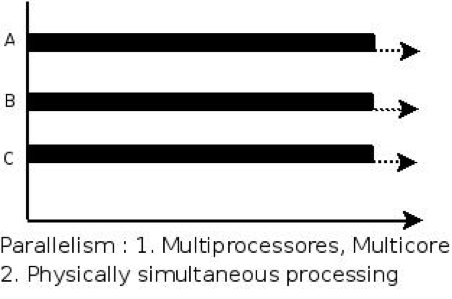
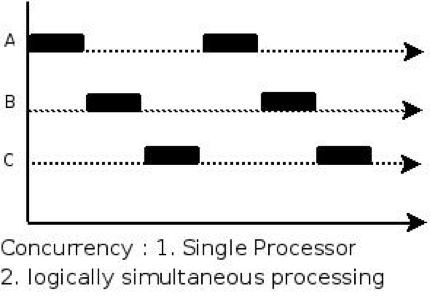
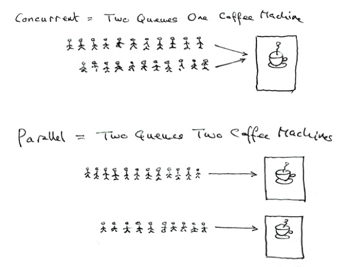

<!DOCTYPE HTML>
<html lang="en" >
    
    <head>
        
        <meta charset="UTF-8">
        <meta http-equiv="X-UA-Compatible" content="IE=edge" />
        <title>概述 | python高级课程</title>
        <meta content="text/html; charset=utf-8" http-equiv="Content-Type">
        <meta name="description" content="">
        <meta name="generator" content="GitBook 2.6.7">
        
        
        <meta name="HandheldFriendly" content="true"/>
        <meta name="viewport" content="width=device-width, initial-scale=1, user-scalable=no">
        <meta name="apple-mobile-web-app-capable" content="yes">
        <meta name="apple-mobile-web-app-status-bar-style" content="black">
        <link rel="apple-touch-icon-precomposed" sizes="152x152" href="../gitbook/images/apple-touch-icon-precomposed-152.png">
        <link rel="shortcut icon" href="../gitbook/images/favicon.ico" type="image/x-icon">
        
    <link rel="stylesheet" href="../gitbook/style.css">
    
        
        <link rel="stylesheet" href="../gitbook/plugins/gitbook-plugin-highlight/website.css">
        
    
        
        <link rel="stylesheet" href="../gitbook/plugins/gitbook-plugin-search/search.css">
        
    
        
        <link rel="stylesheet" href="../gitbook/plugins/gitbook-plugin-fontsettings/website.css">
        
    
    

        
    
    
    <link rel="next" href="../03section/02_线程.html" />
    
    
    <link rel="prev" href="../03section/index.html" />
    

        
    </head>
    <body>
        
        
    <div class="book"
        data-level="3.1"
        data-chapter-title="概述"
        data-filepath="03section/01_概述.md"
        data-basepath=".."
        data-revision="Thu Apr 19 2018 00:22:51 GMT+0800 (CST)"
        data-innerlanguage="">
    

<div class="book-summary">
    <nav role="navigation">
        <ul class="summary">
            
            
            
            

            

            
    
        <li class="chapter " data-level="0" data-path="index.html">
            
                
                    <a href="../index.html">
                
                        <i class="fa fa-check"></i>
                        
                        Python高级
                    </a>
            
            
        </li>
    
        <li class="chapter " data-level="1" data-path="01section/index.html">
            
                
                    <a href="../01section/index.html">
                
                        <i class="fa fa-check"></i>
                        
                            <b>1.</b>
                        
                        Linux操作
                    </a>
            
            
            <ul class="articles">
                
    
        <li class="chapter " data-level="1.1" data-path="01section/01_操作系统介绍.html">
            
                
                    <a href="../01section/01_操作系统介绍.html">
                
                        <i class="fa fa-check"></i>
                        
                            <b>1.1.</b>
                        
                        操作系统介绍
                    </a>
            
            
        </li>
    
        <li class="chapter " data-level="1.2" data-path="01section/02_Linux介绍.html">
            
                
                    <a href="../01section/02_Linux介绍.html">
                
                        <i class="fa fa-check"></i>
                        
                            <b>1.2.</b>
                        
                        Linux介绍
                    </a>
            
            
        </li>
    
        <li class="chapter " data-level="1.3" data-path="01section/03_常用命令.html">
            
                
                    <a href="../01section/03_常用命令.html">
                
                        <i class="fa fa-check"></i>
                        
                            <b>1.3.</b>
                        
                        常用命令
                    </a>
            
            
        </li>
    
        <li class="chapter " data-level="1.4" data-path="01section/04_远程操作.html">
            
                
                    <a href="../01section/04_远程操作.html">
                
                        <i class="fa fa-check"></i>
                        
                            <b>1.4.</b>
                        
                        远程操作
                    </a>
            
            
        </li>
    
        <li class="chapter " data-level="1.5" data-path="01section/05_编辑器vim.html">
            
                
                    <a href="../01section/05_编辑器vim.html">
                
                        <i class="fa fa-check"></i>
                        
                            <b>1.5.</b>
                        
                        编辑器vim
                    </a>
            
            
        </li>
    

            </ul>
            
        </li>
    
        <li class="chapter " data-level="2" data-path="02section/index.html">
            
                
                    <a href="../02section/index.html">
                
                        <i class="fa fa-check"></i>
                        
                            <b>2.</b>
                        
                        网络编程
                    </a>
            
            
            <ul class="articles">
                
    
        <li class="chapter " data-level="2.1" data-path="02section/01_网络概述.html">
            
                
                    <a href="../02section/01_网络概述.html">
                
                        <i class="fa fa-check"></i>
                        
                            <b>2.1.</b>
                        
                        网络概述
                    </a>
            
            
        </li>
    
        <li class="chapter " data-level="2.2" data-path="02section/02_socket.html">
            
                
                    <a href="../02section/02_socket.html">
                
                        <i class="fa fa-check"></i>
                        
                            <b>2.2.</b>
                        
                        socket
                    </a>
            
            
        </li>
    
        <li class="chapter " data-level="2.3" data-path="02section/03_UDP.html">
            
                
                    <a href="../02section/03_UDP.html">
                
                        <i class="fa fa-check"></i>
                        
                            <b>2.3.</b>
                        
                        UDP
                    </a>
            
            
        </li>
    
        <li class="chapter " data-level="2.4" data-path="02section/04_TCP.html">
            
                
                    <a href="../02section/04_TCP.html">
                
                        <i class="fa fa-check"></i>
                        
                            <b>2.4.</b>
                        
                        TCP
                    </a>
            
            
        </li>
    

            </ul>
            
        </li>
    
        <li class="chapter " data-level="3" data-path="03section/index.html">
            
                
                    <a href="../03section/index.html">
                
                        <i class="fa fa-check"></i>
                        
                            <b>3.</b>
                        
                        多任务编程
                    </a>
            
            
            <ul class="articles">
                
    
        <li class="chapter active" data-level="3.1" data-path="03section/01_概述.html">
            
                
                    <a href="../03section/01_概述.html">
                
                        <i class="fa fa-check"></i>
                        
                            <b>3.1.</b>
                        
                        概述
                    </a>
            
            
        </li>
    
        <li class="chapter " data-level="3.2" data-path="03section/02_线程.html">
            
                
                    <a href="../03section/02_线程.html">
                
                        <i class="fa fa-check"></i>
                        
                            <b>3.2.</b>
                        
                        线程
                    </a>
            
            
        </li>
    
        <li class="chapter " data-level="3.3" data-path="03section/03_进程.html">
            
                
                    <a href="../03section/03_进程.html">
                
                        <i class="fa fa-check"></i>
                        
                            <b>3.3.</b>
                        
                        进程
                    </a>
            
            
        </li>
    
        <li class="chapter " data-level="3.4" data-path="03section/04_协程.html">
            
                
                    <a href="../03section/04_协程.html">
                
                        <i class="fa fa-check"></i>
                        
                            <b>3.4.</b>
                        
                        协程
                    </a>
            
            
        </li>
    

            </ul>
            
        </li>
    
        <li class="chapter " data-level="4" data-path="04section/index.html">
            
                
                    <a href="../04section/index.html">
                
                        <i class="fa fa-check"></i>
                        
                            <b>4.</b>
                        
                        正则表达式
                    </a>
            
            
            <ul class="articles">
                
    
        <li class="chapter " data-level="4.1" data-path="04section/01_概述.html">
            
                
                    <a href="../04section/01_概述.html">
                
                        <i class="fa fa-check"></i>
                        
                            <b>4.1.</b>
                        
                        概述
                    </a>
            
            
        </li>
    
        <li class="chapter " data-level="4.2" data-path="04section/02_匹配单个字符.html">
            
                
                    <a href="../04section/02_匹配单个字符.html">
                
                        <i class="fa fa-check"></i>
                        
                            <b>4.2.</b>
                        
                        匹配单个字符
                    </a>
            
            
        </li>
    
        <li class="chapter " data-level="4.3" data-path="04section/03_匹配多个字符.html">
            
                
                    <a href="../04section/03_匹配多个字符.html">
                
                        <i class="fa fa-check"></i>
                        
                            <b>4.3.</b>
                        
                        匹配多个字符
                    </a>
            
            
        </li>
    
        <li class="chapter " data-level="4.4" data-path="04section/04_匹配开头结尾.html">
            
                
                    <a href="../04section/04_匹配开头结尾.html">
                
                        <i class="fa fa-check"></i>
                        
                            <b>4.4.</b>
                        
                        匹配开头结尾
                    </a>
            
            
        </li>
    
        <li class="chapter " data-level="4.5" data-path="04section/05_匹配分组.html">
            
                
                    <a href="../04section/05_匹配分组.html">
                
                        <i class="fa fa-check"></i>
                        
                            <b>4.5.</b>
                        
                        匹配分组
                    </a>
            
            
        </li>
    
        <li class="chapter " data-level="4.6" data-path="04section/06_re模块的高级用法.html">
            
                
                    <a href="../04section/06_re模块的高级用法.html">
                
                        <i class="fa fa-check"></i>
                        
                            <b>4.6.</b>
                        
                        re模块的高级用法
                    </a>
            
            
        </li>
    
        <li class="chapter " data-level="4.7" data-path="04section/07_贪婪和非贪婪.html">
            
                
                    <a href="../04section/07_贪婪和非贪婪.html">
                
                        <i class="fa fa-check"></i>
                        
                            <b>4.7.</b>
                        
                        贪婪和非贪婪
                    </a>
            
            
        </li>
    
        <li class="chapter " data-level="4.8" data-path="04section/08_r的作用.html">
            
                
                    <a href="../04section/08_r的作用.html">
                
                        <i class="fa fa-check"></i>
                        
                            <b>4.8.</b>
                        
                        r的作用
                    </a>
            
            
        </li>
    

            </ul>
            
        </li>
    
        <li class="chapter " data-level="5" data-path="05section/index.html">
            
                
                    <a href="../05section/index.html">
                
                        <i class="fa fa-check"></i>
                        
                            <b>5.</b>
                        
                        HTTP协议
                    </a>
            
            
            <ul class="articles">
                
    
        <li class="chapter " data-level="5.1" data-path="05section/01_Web工作方式.html">
            
                
                    <a href="../05section/01_Web工作方式.html">
                
                        <i class="fa fa-check"></i>
                        
                            <b>5.1.</b>
                        
                        Web工作方式
                    </a>
            
            
        </li>
    
        <li class="chapter " data-level="5.2" data-path="05section/02_HTTP协议.html">
            
                
                    <a href="../05section/02_HTTP协议.html">
                
                        <i class="fa fa-check"></i>
                        
                            <b>5.2.</b>
                        
                        HTTP协议
                    </a>
            
            
        </li>
    
        <li class="chapter " data-level="5.3" data-path="05section/03_HTTP报文浅析.html">
            
                
                    <a href="../05section/03_HTTP报文浅析.html">
                
                        <i class="fa fa-check"></i>
                        
                            <b>5.3.</b>
                        
                        HTTP报文浅析
                    </a>
            
            
        </li>
    
        <li class="chapter " data-level="5.4" data-path="05section/04_长连接和短连接.html">
            
                
                    <a href="../05section/04_长连接和短连接.html">
                
                        <i class="fa fa-check"></i>
                        
                            <b>5.4.</b>
                        
                        长连接和短连接
                    </a>
            
            
        </li>
    

            </ul>
            
        </li>
    
        <li class="chapter " data-level="6" data-path="06section/index.html">
            
                
                    <a href="../06section/index.html">
                
                        <i class="fa fa-check"></i>
                        
                            <b>6.</b>
                        
                        mini-web服务器实现
                    </a>
            
            
            <ul class="articles">
                
    
        <li class="chapter " data-level="6.1" data-path="06section/01_mini-web服务器实现.html">
            
                
                    <a href="../06section/01_mini-web服务器实现.html">
                
                        <i class="fa fa-check"></i>
                        
                            <b>6.1.</b>
                        
                        mini-web服务器实现
                    </a>
            
            
        </li>
    

            </ul>
            
        </li>
    


            
            <li class="divider"></li>
            <li>
                <a href="https://www.gitbook.com" target="blank" class="gitbook-link">
                    Published with GitBook
                </a>
            </li>
            
        </ul>
    </nav>
</div>

    <div class="book-body">
        <div class="body-inner">
            <div class="book-header" role="navigation">
    <!-- Actions Left -->
    

    <!-- Title -->
    <h1>
        <i class="fa fa-circle-o-notch fa-spin"></i>
        <a href="../" >python高级课程</a>
    </h1>
</div>

            <div class="page-wrapper" tabindex="-1" role="main">
                <div class="page-inner">
                
                
                    <section class="normal" id="section-">
                    
                        <h1 id="311-&#x4EC0;&#x4E48;&#x662F;&#x591A;&#x4EFB;&#x52A1;">3.1.1 &#x4EC0;&#x4E48;&#x662F;&#x591A;&#x4EFB;&#x52A1;</h1>
<p>&#x4EC0;&#x4E48;&#x53EB;&#x201C;&#x591A;&#x4EFB;&#x52A1;&#x201D;&#x5462;&#xFF1F;&#x7B80;&#x5355;&#x5730;&#x8BF4;&#xFF0C;&#x5C31;&#x662F;&#x64CD;&#x4F5C;&#x7CFB;&#x7EDF;&#x53EF;&#x4EE5;&#x540C;&#x65F6;&#x8FD0;&#x884C;&#x591A;&#x4E2A;&#x4EFB;&#x52A1;&#x3002;</p>
<p>&#x6253;&#x4E2A;&#x6BD4;&#x65B9;&#xFF0C;&#x4F60;&#x4E00;&#x8FB9;&#x5728;&#x7528;&#x6D4F;&#x89C8;&#x5668;&#x4E0A;&#x7F51;&#xFF0C;&#x4E00;&#x8FB9;&#x5728;&#x542C;MP3&#xFF0C;&#x4E00;&#x8FB9;&#x5728;&#x7528;Word&#x8D76;&#x4F5C;&#x4E1A;&#xFF0C;&#x8FD9;&#x5C31;&#x662F;&#x591A;&#x4EFB;&#x52A1;&#xFF0C;&#x81F3;&#x5C11;&#x540C;&#x65F6;&#x6709;3&#x4E2A;&#x4EFB;&#x52A1;&#x6B63;&#x5728;&#x8FD0;&#x884C;&#x3002;&#x8FD8;&#x6709;&#x5F88;&#x591A;&#x4EFB;&#x52A1;&#x6084;&#x6084;&#x5730;&#x5728;&#x540E;&#x53F0;&#x540C;&#x65F6;&#x8FD0;&#x884C;&#x7740;&#xFF0C;&#x53EA;&#x662F;&#x684C;&#x9762;&#x4E0A;&#x6CA1;&#x6709;&#x663E;&#x793A;&#x800C;&#x5DF2;&#x3002;</p>
<p></p>
<h1 id="312-&#x5E76;&#x884C;&#x548C;&#x5E76;&#x53D1;">3.1.2 &#x5E76;&#x884C;&#x548C;&#x5E76;&#x53D1;</h1>
<p>&#x5E76;&#x884C;(parallel)&#xFF1A;&#x6307;&#x5728;&#x540C;&#x4E00;&#x65F6;&#x523B;&#xFF0C;&#x6709;&#x591A;&#x6761;&#x6307;&#x4EE4;&#x5728;&#x591A;&#x4E2A;&#x5904;&#x7406;&#x5668;&#x4E0A;&#x540C;&#x65F6;&#x6267;&#x884C;&#x3002;</p>
<p></p>
<p>&#x5E76;&#x53D1;(concurrency)&#xFF1A;&#x6307;&#x5728;&#x540C;&#x4E00;&#x65F6;&#x523B;&#x53EA;&#x80FD;&#x6709;&#x4E00;&#x6761;&#x6307;&#x4EE4;&#x6267;&#x884C;&#xFF0C;&#x4F46;&#x591A;&#x4E2A;&#x8FDB;&#x7A0B;&#x6307;&#x4EE4;&#x88AB;&#x5FEB;&#x901F;&#x7684;&#x8F6E;&#x6362;&#x6267;&#x884C;&#xFF0C;&#x4F7F;&#x5F97;&#x5728;&#x5B8F;&#x89C2;&#x4E0A;&#x5177;&#x6709;&#x591A;&#x4E2A;&#x8FDB;&#x7A0B;&#x540C;&#x65F6;&#x6267;&#x884C;&#x7684;&#x6548;&#x679C;&#xFF0C;&#x4F46;&#x5728;&#x5FAE;&#x89C2;&#x4E0A;&#x5E76;&#x4E0D;&#x662F;&#x540C;&#x65F6;&#x6267;&#x884C;&#x7684;&#xFF0C;&#x53EA;&#x662F;&#x628A;&#x65F6;&#x95F4;&#x5206;&#x6210;&#x82E5;&#x5E72;&#x6BB5;&#xFF0C;&#x4F7F;&#x591A;&#x4E2A;&#x8FDB;&#x7A0B;&#x5FEB;&#x901F;&#x4EA4;&#x66FF;&#x7684;&#x6267;&#x884C;&#x3002;</p>
<p></p>
<p>&#x771F;&#x6B63;&#x7684;&#x5E76;&#x884C;&#x6267;&#x884C;&#x591A;&#x4EFB;&#x52A1;&#x53EA;&#x80FD;&#x5728;&#x591A;&#x6838;CPU&#x4E0A;&#x5B9E;&#x73B0;&#xFF0C;&#x4F46;&#x662F;&#xFF0C;&#x7531;&#x4E8E;&#x4EFB;&#x52A1;&#x6570;&#x91CF;&#x8FDC;&#x8FDC;&#x591A;&#x4E8E;CPU&#x7684;&#x6838;&#x5FC3;&#x6570;&#x91CF;&#xFF0C;&#x6240;&#x4EE5;&#xFF0C;&#x64CD;&#x4F5C;&#x7CFB;&#x7EDF;&#x4E5F;&#x4F1A;&#x81EA;&#x52A8;&#x628A;&#x5F88;&#x591A;&#x4EFB;&#x52A1;&#x8F6E;&#x6D41;&#x8C03;&#x5EA6;&#x5230;&#x6BCF;&#x4E2A;&#x6838;&#x5FC3;&#x4E0A;&#x6267;&#x884C;&#x3002;</p>
<ul>
<li>&#x5E76;&#x53D1;&#xFF1A;&#x6307;&#x7684;&#x662F;&#x4EFB;&#x52A1;&#x6570;&#x591A;&#x4F59;cpu&#x6838;&#x6570;&#xFF0C;&#x901A;&#x8FC7;&#x64CD;&#x4F5C;&#x7CFB;&#x7EDF;&#x7684;&#x5404;&#x79CD;&#x4EFB;&#x52A1;&#x8C03;&#x5EA6;&#x7B97;&#x6CD5;&#xFF0C;&#x5B9E;&#x73B0;&#x7528;&#x591A;&#x4E2A;&#x4EFB;&#x52A1;&#x201C;&#x4E00;&#x8D77;&#x201D;&#x6267;&#x884C;&#xFF08;&#x5B9E;&#x9645;&#x4E0A;&#x603B;&#x6709;&#x4E00;&#x4E9B;&#x4EFB;&#x52A1;&#x4E0D;&#x5728;&#x6267;&#x884C;&#xFF0C;&#x56E0;&#x4E3A;&#x5207;&#x6362;&#x4EFB;&#x52A1;&#x7684;&#x901F;&#x5EA6;&#x76F8;&#x5F53;&#x5FEB;&#xFF0C;&#x770B;&#x4E0A;&#x53BB;&#x4E00;&#x8D77;&#x6267;&#x884C;&#x800C;&#x5DF2;&#xFF09;</li>
<li><p>&#x5E76;&#x884C;&#xFF1A;&#x6307;&#x7684;&#x662F;&#x4EFB;&#x52A1;&#x6570;&#x5C0F;&#x4E8E;&#x7B49;&#x4E8E;cpu&#x6838;&#x6570;&#xFF0C;&#x5373;&#x4EFB;&#x52A1;&#x771F;&#x7684;&#x662F;&#x4E00;&#x8D77;&#x6267;&#x884C;&#x7684;</p>
</li>
<li><p>&#x5E76;&#x884C;&#x662F;&#x4E24;&#x4E2A;&#x961F;&#x5217;&#x540C;&#x65F6;&#x4F7F;&#x7528;&#x4E24;&#x53F0;&#x5496;&#x5561;&#x673A;</p>
</li>
<li>&#x5E76;&#x53D1;&#x662F;&#x4E24;&#x4E2A;&#x961F;&#x5217;&#x4EA4;&#x66FF;&#x4F7F;&#x7528;&#x4E00;&#x53F0;&#x5496;&#x5561;&#x673A;</li>
</ul>
<p></p>

                    
                    </section>
                
                
                </div>
            </div>
        </div>

        
        <a href="../03section/index.html" class="navigation navigation-prev " aria-label="Previous page: 多任务编程"><i class="fa fa-angle-left"></i></a>
        
        
        <a href="../03section/02_线程.html" class="navigation navigation-next " aria-label="Next page: 线程"><i class="fa fa-angle-right"></i></a>
        
    </div>
</div>

        
<script src="../gitbook/app.js"></script>

    
    <script src="../gitbook/plugins/gitbook-plugin-search/lunr.min.js"></script>
    

    
    <script src="../gitbook/plugins/gitbook-plugin-search/search.js"></script>
    

    
    <script src="../gitbook/plugins/gitbook-plugin-sharing/buttons.js"></script>
    

    
    <script src="../gitbook/plugins/gitbook-plugin-fontsettings/buttons.js"></script>
    

<script>
require(["gitbook"], function(gitbook) {
    var config = {"highlight":{},"search":{"maxIndexSize":1000000},"sharing":{"facebook":true,"twitter":true,"google":false,"weibo":false,"instapaper":false,"vk":false,"all":["facebook","google","twitter","weibo","instapaper"]},"fontsettings":{"theme":"white","family":"sans","size":2}};
    gitbook.start(config);
});
</script>

        
    </body>
    
</html>
